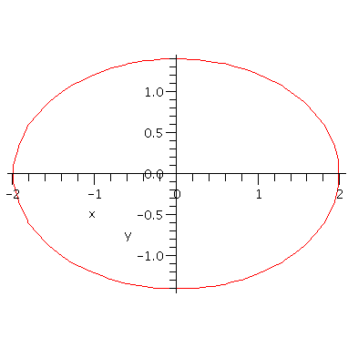
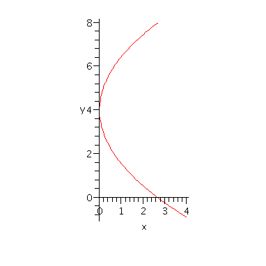
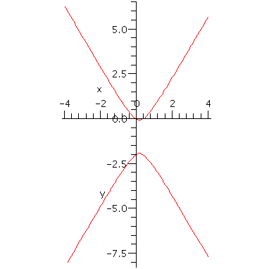

Conic sections
Maple can make it easy to recognize which type of conic section a given equation describes. Since in many cases the graphs are not of an explicit form y=f(x), it's best to use implicitplot. It often takes a few tries to select the right ranges for x and y in the command.
| > | with(plots): |
| > | implicitplot( x^2/4 + y^2/2 = 1, x=-3..3,y=-3..3, scaling=constrained ) ; |

| > | implicitplot( y^2 - 8*y = 6*x - 16, x=-4..4,y=-4..8, scaling=constrained ); |

| > | implicitplot( y^2+2*y = 3*x^2-x, x=-4..4,y=-8..8, scaling=constrained ); |
